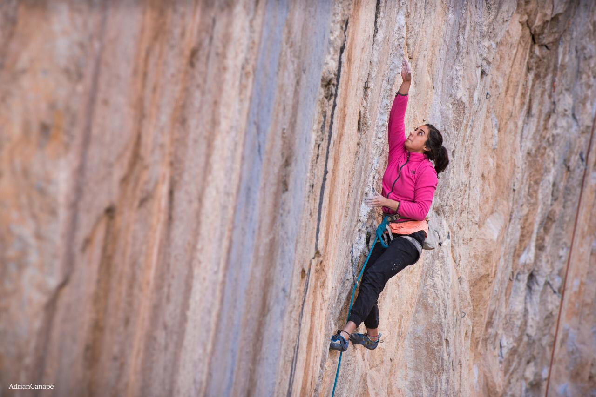
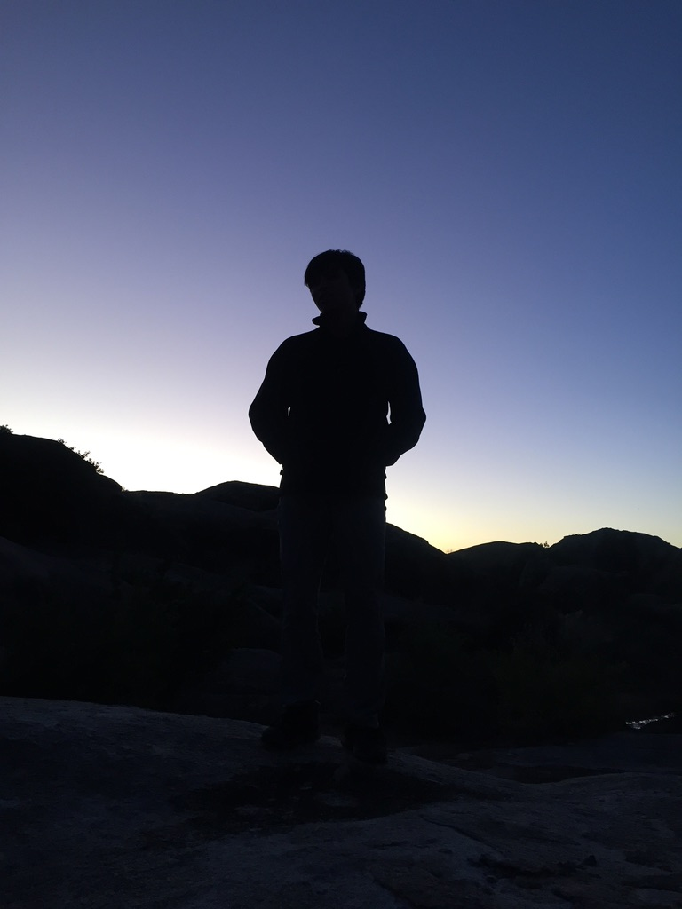
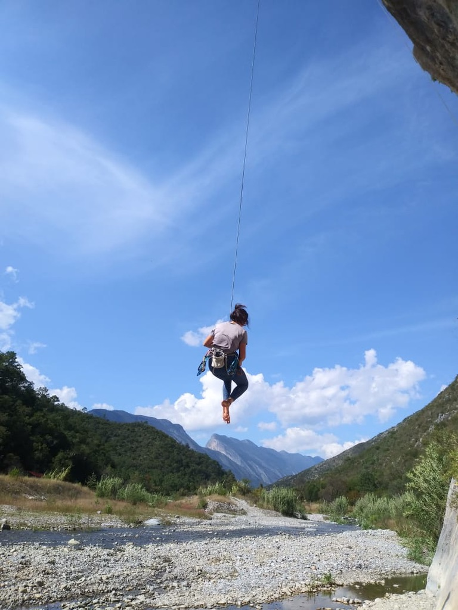
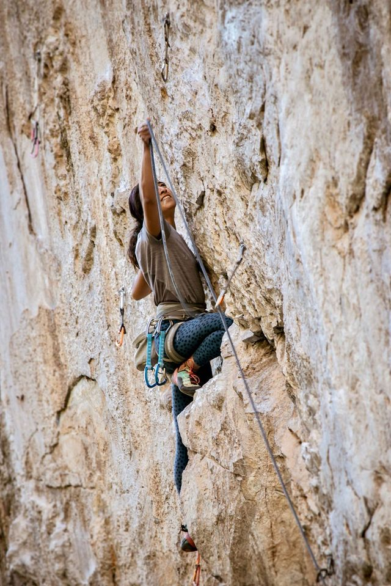
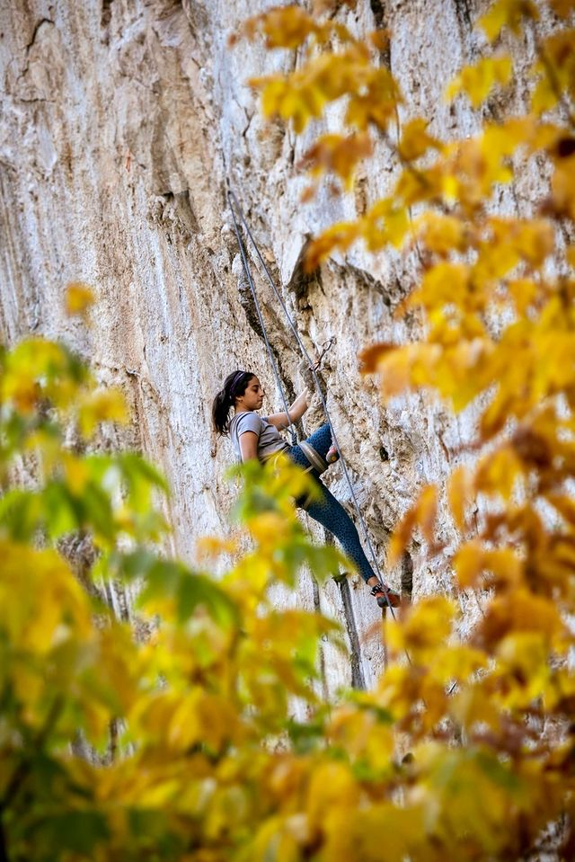

I have been climbing for almost four years now, though I wouldn't count
the last year since I've done little to no climbing. Nontheless, I still
consider myself a climber, as I hope that anytime soon I will be able to
retake fully my favorite hobbie. In this page, I share some
climbing-related photos.

Figure 1. Climbing The Art of Flying, a 12c at La Boca,
El Salto. Photo taken by Adrian Cánape in Decemeber 2018.

Figure 2. A dear friend of mine at sunset in Peñoles,
Chihuahua. Photo taken by me in November 2019.

Figure 3. Lowering from a route in . Photo taken by me in
November 2019.

Figure 2. Climbing Ayotzinapa 13, a 13a at La Boca, in
El Salto. Photo taken by Elizabeth Rubio in January 2020.

Figure 3. Climbing Ayotzinapa 13, a 13a at La Boca, in
El Salto. Photo taken by Elizabeth Rubio in January 2020.